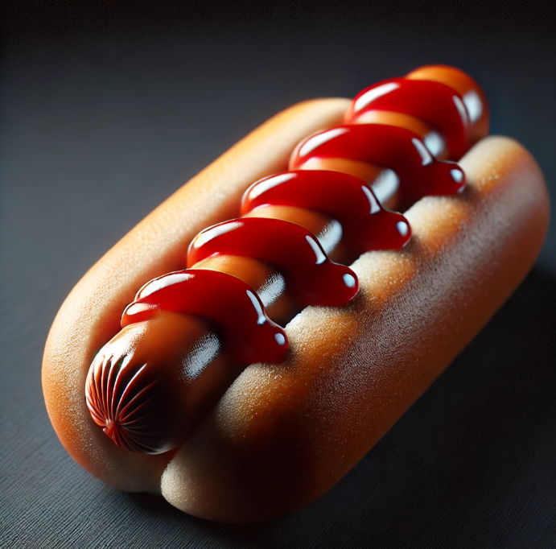

Arizona Famous Hawt Dog

Description
That's a lot of ketchup! You dang right it is. That's how an Arizona dog
is done, my person. 5 thick lines of pure, unadulterated ketchup runs the length of the hawt dog.
And the rule is: "There can be only one." - Duncan McDog of the Clan McDog.
Ingredients
- One white hawt dog bun
- Uno All-American beef hawt dog
- 1 long squirt of ketchup
STEPS
- Toss hawt dog bun on a plate.
- Boil or air fry the hawt dog until blisters rip along the entire dog.
- Gently set hawt dog into bun.
- Squirt 1 long, zig-zagging line of ketchup along the dog.
- DO NOT MAKE MORE THAN ONE - THERE CAN BE ONLY ONE!!